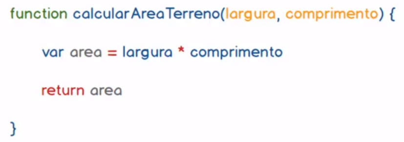
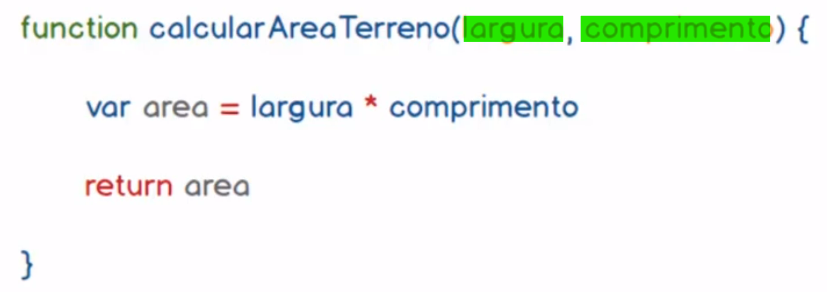

Funções encapsulam bloco de códigos com um objetivo bem definido e podem ser reutilizadas quando necessário.
Exemplo da sintaxe da função:
Os parâmetros ou argumentos, servem para entradas de dados da função.
Uma função pode não ter parâmetros ou quantos parâmetros forem necessários. Basta serpará-los por vírgula.
Funções são sub-programs dos nosso programas. Elas podem ter diversas lógicas embutidas e inclusíve outras funções.
As funções podem ser de dois tipos:
Void - quando chamadas vão processar alguma lógica porém sem retorno.
Com retorno - ou seja, precessa alguma informação e trás um retorno pré-definido.